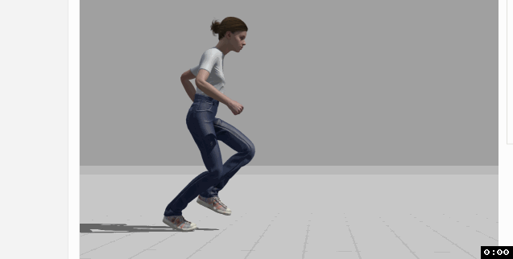

This is not finished yet.
Last updated: September 25, 2024
An average American teenager dressed in street clothes.
A skeleton arm that bursts out of the ground.


Change direction while walking.

Arms are up and flailing.


Change direction while running.

The arm should start out buried under a pile of dirt, and pop out of the ground.

Should look like the interior of a mausoleum.


The floor is currently 9 (width) x 3 (height). I would like to make this taller – 5 height, which means the tiles might need to be smaller or of a different perspective.


| milestone | due |
|---|---|
| 1 | 10/16 |
| 2 | 10/31 |
| 3 | |
| 4 | |
| 5 | |
| 6 | |
| 7 |
| subject | type | format | milestone |
|---|---|---|---|
| Door | Concept Art | png | 1 |
| Interior Background | Concept Art | png | 1 |
| Mainstream Mark | Concept Art | png | 1 |
| Skelly Arm | Concept Art | png | 1 |
| Tile | Concept Art | png | 1 |
| Scream Icon | Icon | png and psd | 1 |
| Mainstream Mark | Character Turnaround | png | 2 |
| Skelly Arm | Character Turnaround | png | 2 |
| Door | Rough Layout & Composition | png | 2 |
| Interior Background | Rough Layout & Composition | png | 2 |
| Tile | Rough Layout & Composition | png | 2 |
| Door | Clean Line Art | png | 3 |
| Interior Background | Clean Line Art | png | 3 |
| Mainstream Mark | Clean Line Art | png | 3 |
| Skelly Arm | Clean Line Art | png | 3 |
| Tile | Clean Line Art | png | 3 |
| Door | Coloring and Shading | png and psd | 4 |
| Interior Background | Coloring and Shading | png and psd | 4 |
| Mainstream Mark | Coloring and Shading | png and psd | 4 |
| Skelly Arm | Coloring and Shading | png and psd | 4 |
| Tile | Coloring and Shading | png and psd | 4 |
| Mainstream Mark - Happy strut | Animation | png sprite sheet | 5 |
| Mainstream Mark - Change direction running | Animation | png sprite sheet | 5 |
| Mainstream Mark - Change direction walking | Animation | png sprite sheet | 5 |
| Mainstream Mark - Running and screaming | Animation | png sprite sheet | 5 |
| Skelly Arm - Ground Pop | Animation | png sprite sheet | 5 |
| Skelly Arm - Thumbs Up | Animation | png sprite sheet | 5 |
| User Interface - Sidebar | Concept Art | png and psd | 6 |
| User Interface - Skelly Arm | Icon | png and psd | 6 |
| User Interface - Undo Button | Icon | png and psd | 6 |